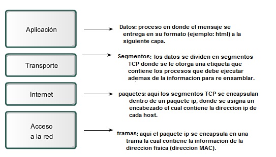

1.El TCP/IP define cuidadosamente cómo se mueve la información desde el remitente hasta el destinatario. En primer lugar, los programas de aplicación envían mensajes o corrientes de datos a uno de los protocolos de la capa de transporte de Internet, UDP (User Datagram Protocol) o TCP (Transmission Control Protocolo).
¿En que capa actua el protocolo TCP/IP?
2.Hay cuatro capas en el modelo TCP/IP: acceso a la red, Internet, transporte y aplicación. Conjuntamente, estas capas son un conjunto de protocolos

Acontinuacion un video explicativo del protocolo TCP/IP